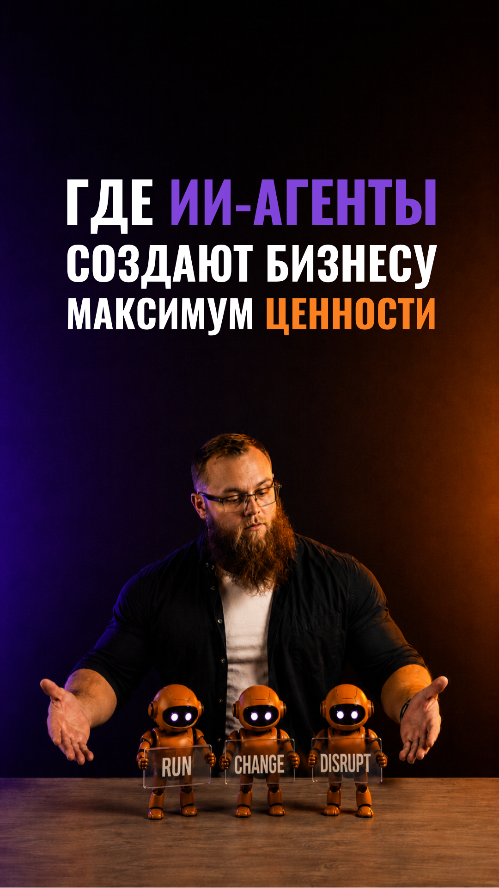

АКАДЕМИЯ ДАТАИСТА
RUN
Процессы
CHANGE
Проекты
DISRUPT
Продукты
Бизнес-прорывы
Адаптация к среде
Сохранение устойчивости
Основные
Создают ценность
Рост выручки
Поддерживающие
HR, финансы, IT
Снижение затрат
Управленческие
Принятие решений
Качество решений
ИИ
Функции
Процессы
Данные
Люди
Письма
···
Согласования
···
Встречи
Задержки и ошибки
ИИ
Функции
Процессы
Данные
Люди
Единая интеллектуальная система
Цифровая
нервная система
Узкие места
Время · Деньги
Ошибки
Точки решений
Анализ данных
Лучший вариант
Финансы
HR
Маркетинг
Продажи
Поддержка
Аналитика
Конкретные метрики
Скорость
Качество
Прибыль

верх постеров · y638
макушка · y816